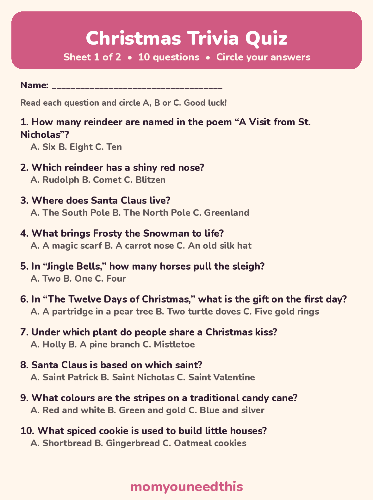
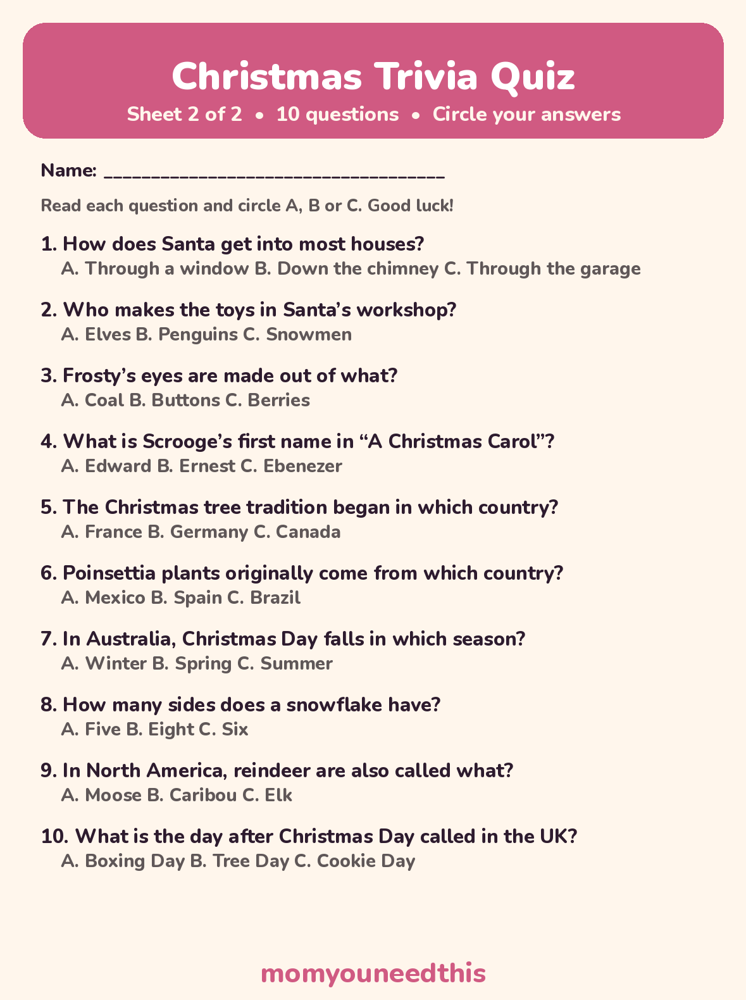
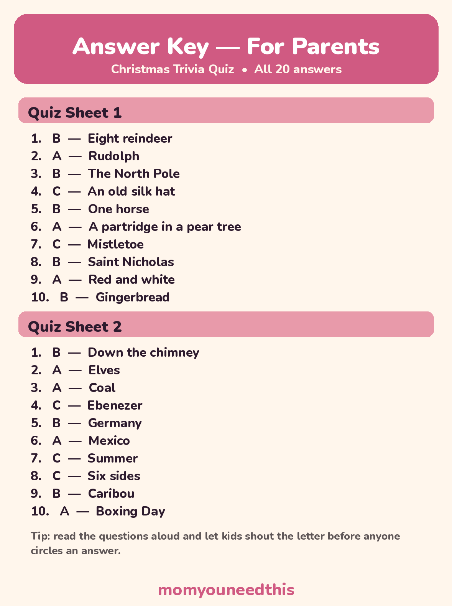

Christmas Trivia for Kids 30 Questions With Answers, Plus Free Printable Quiz Sheets
Thirty Christmas trivia questions for kids, grouped into Santa and his reindeer, songs and stories, traditions from around the world, and Christmas food and nature. Read the questions aloud, cover the answers, and play — then print two free quiz sheets with a parent answer key.
Last updated: October 25, 2026
Quick Answer
This page collects 30 Christmas trivia questions for kids aged 5 to 10, with every answer printed under its question so a parent can run the game. Eight explore Santa and his reindeer, eight cover songs and stories, and fourteen more cover traditions, food and winter nature. Two printable quiz sheets are free below.
At a Glance
- Questions: 30, in 4 groups
- Ages: 5–10 (easy questions for 5–7, harder ones marked 🌟 for 8–10)
- Printables: 3 sheets — 2 quiz sheets (20 questions) + 1 answer key
- Answers: Under every question on this page; never on the quiz sheets
- Skills: Listening, memory, reading along
- Cost: Free — print at home
🦌 Santa & His Reindeer
Start here — most kids know half of these already, which makes a good warm-up. Questions marked 🌟 are the harder ones for ages 8 to 10.
How many reindeer are named in the 1823 poem “A Visit from St. Nicholas”? Answer: Eight.
🌟 Can you name all eight of those reindeer? Answer: Dasher, Dancer, Prancer, Vixen, Comet, Cupid, Donner and Blitzen. (The 1823 poem printed the seventh name as “Donder” — most books today use Donner.)
Which reindeer has a shiny red nose? Answer: Rudolph. He is not in the 1823 poem — he arrived much later, in a story written in 1939.
Where does Santa Claus live? Answer: The North Pole.
How does Santa get into most houses? Answer: Down the chimney.
Who makes the toys in Santa's workshop? Answer: His elves.
What snack do many children in the US leave out for Santa on Christmas Eve? Answer: A glass of milk and cookies.
🌟 In the poem, Santa's little round belly shakes like what when he laughs? Answer: A bowl full of jelly.
🎵 Christmas Songs & Stories
Songs the whole family has sung a hundred times, and two classic stories. Sing the question if you can — it counts as a hint.
In “Jingle Bells,” how many horses pull the sleigh? Answer: One — the song calls it a “one-horse open sleigh.”
What kind of weather made Santa ask Rudolph to guide his sleigh? Answer: Fog — it was “one foggy Christmas Eve.”
Frosty the Snowman's eyes are made out of what? Answer: Coal — “his eyes are made out of coal.”
What brings Frosty to life? Answer: An old silk hat — “there must have been some magic in that old silk hat.”
In “The Twelve Days of Christmas,” what is the gift on the very first day? Answer: A partridge in a pear tree.
What is Scrooge's first name in “A Christmas Carol”? Answer: Ebenezer.
🌟 In Dr. Seuss's Grinch story, what happens to the Grinch's heart at the end? Answer: It grows three sizes.
🌟 The carol “Silent Night” was first sung in 1818 in which country? Answer: Austria.
🌍 Christmas Around the World & Traditions
Christmas looks a little different in every country — summer weather in Australia, Boxing Day in the UK, and a saint behind Santa himself.
Under which plant do people traditionally stand to share a kiss? Answer: Mistletoe.
Santa Claus is based on which saint? Answer: Saint Nicholas.
The Christmas tree tradition began in which country? Answer: Germany.
🌟 Poinsettia plants — the red Christmas flowers — originally come from which country? Answer: Mexico.
In Australia, Christmas Day falls in which season? Answer: Summer — December is summertime in the southern half of the world.
🌟 What is the day after Christmas Day called in the UK? Answer: Boxing Day (December 26).
On which December date does the first door of most children's Advent calendars open? Answer: December 1.
🍪 Christmas Food & Nature
Finish with the tasty questions — and a few about real reindeer and real snowflakes, which are stranger than the story versions.
What colours are the stripes on a traditional candy cane? Answer: Red and white.
What spiced cookie is used to build little houses at Christmas? Answer: Gingerbread.
Which creamy, spiced drink is traditionally served at Christmas? Answer: Eggnog.
What vegetable do children often leave out for Santa's reindeer? Answer: Carrots.
🌟 In North America, reindeer are also called by what other name? Answer: Caribou — they are the same animal.
🌟 Do female reindeer grow antlers too? Answer: Yes. Reindeer are unusual deer — both males and females grow antlers.
How many sides does a snowflake have? Answer: Six.
✂️ The Printable Quiz Sheets
Twenty of the questions above are also on two printable multiple-choice quiz sheets — 10 questions each, with space to circle an answer. No answers are printed on the quiz sheets; every answer is on the separate answer key sheet, clearly marked for parents, so kids cannot peek.

✂️ Download Your Free Quiz Sheet 1
10 multiple-choice questions — sheet 1 of 2, plus the answer key below.
⬇️ Download Free Quiz Sheet 🖨️ Print🎁 Free printable for ages 5–10

✂️ Download Your Free Quiz Sheet 2
10 more multiple-choice questions — sheet 2 of 2.
⬇️ Download Free Quiz Sheet 🖨️ Print🎁 Free printable for ages 5–10

✂️ Download Your Free Answer Key — For Parents
All 20 answers for both quiz sheets, on one sheet marked for parents.
⬇️ Download Free Answer Key 🖨️ Print🎁 Free printable for parents and teachers
🎲 Playing Trivia as a Family Game
Christmas trivia turns into a proper family game with almost no setup: one person reads, everyone else shouts. At a classroom party, read the questions aloud and let tables answer as teams — the easy questions keep the youngest kids in the game while the 🌟 questions give older kids something to chase. In the car, the printable sheets stay in the glove box and one child plays quizmaster from the back seat. At the dinner table, run one theme per night in the week before Christmas and keep a running score on the fridge — four themes, four nights, and the winner picks dessert on Christmas Eve.
🖨️ How to Use These Quiz Sheets
- Print the two quiz sheets, keep the key aside. Print quiz sheets 1 and 2 for the players, and put the answer key sheet in a drawer or face-down — it is marked for parents so the answers stay a surprise.
- Read the question, then the three choices. Younger kids do much better hearing A, B and C out loud before they circle one. On this page, the same questions appear with the answers underneath, so you can also play straight from your phone.
- Let kids circle, then check together. Go through the answers as a group with the key — a wrong answer with a good story behind it (“caribou!”) is half the fun.
- Swap the quizmaster. Once a child knows a sheet, hand it over and let them read the questions to you. Reading questions aloud to an audience is the game, too.
🎄 More Christmas Fun for Kids
😂 Christmas Jokes for Kids
Clean, silly Christmas jokes kids can memorize and tell at the table. Read the jokes.
🔍 Christmas Scavenger Hunt
A printable hunt for Christmas things to find around the house and the neighborhood. Start the hunt.
🔤 Christmas Word Search
Free printable word searches full of Christmas words for kids. Find the words.
📚 Learning Activities
The full hub of free printable activities for toddlers and preschoolers. Browse activities.
🎨 Free Coloring Pages
Hundreds of free coloring sheets to print for every age. See the coloring pages.
✍️ Older Kids Worksheets
Worksheets and activities for siblings ages 5 to 10. Explore Older Kids.
❓ Christmas Trivia FAQ
How many Christmas trivia questions are on this page?
There are 30 questions on this page, in four groups: Santa and his reindeer, Christmas songs and stories, Christmas around the world and traditions, and Christmas food and nature. Twenty of them are also on the two printable quiz sheets.
What ages is this trivia for?
The questions suit ages 5 to 10. Most are easy enough for ages 5 to 7 — Santa's home, Rudolph's nose, the colours of a candy cane — and the questions marked 🌟 are harder ones for ages 8 to 10, like the country poinsettias come from.
Are the answers printed on the quiz sheets?
No. The two quiz sheets have questions and three choices each, with nothing marked. All 20 answers are on a separate answer key sheet that is clearly marked for parents, so you can print the quizzes for kids without spoiling anything.
Can I use these questions for a classroom party?
Yes — the questions and the printable sheets are free for personal and classroom use. Read them aloud for a whole-class game, or print a quiz sheet per child and check the answers together with the answer key.
Why does the poem name eight reindeer, but kids count nine?
The 1823 poem “A Visit from St. Nicholas” names eight: Dasher, Dancer, Prancer, Vixen, Comet, Cupid, Donner and Blitzen. Rudolph was created over a hundred years later, in a story booklet written in 1939 — which is why he leads the sleigh in songs but never appears in the poem.